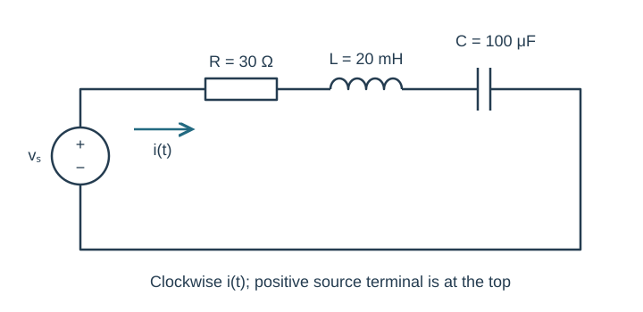
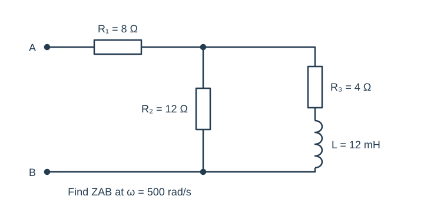
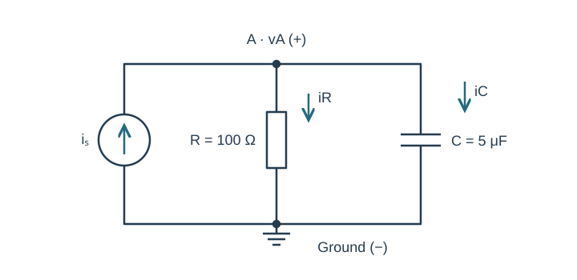
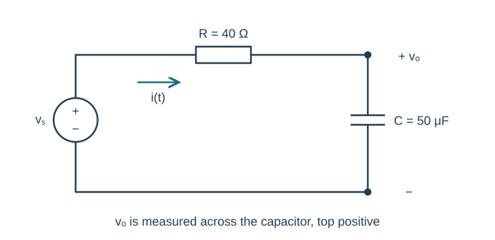
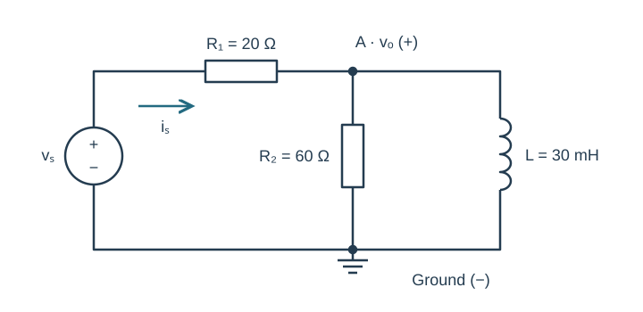

Course practice / Batch 01 / 2026-10-10 PDT
ENGR 202
正弦、相量与阻抗
Sinusoids, phasors & impedance · HW 1 风格 5 题 + HW 2 风格 5 题
Read a sinusoid
Let \(v(t)=6\cos(400\pi t-\pi/3)\;\mathrm V\), where t is in seconds.
- Find amplitude, angular frequency (rad/s), frequency (Hz), period (ms), and phase (degrees).
- Find the first maximum at or after t = 0 and the first minimum at or after t = 0.
- Plot v against t from 0 to 15 ms using a spreadsheet or plotting tool. Label axes, units, title, and mark those extrema.
中文提示（不含解答）
先确定角频率；解相位条件后再把秒换成毫秒。
Sine, cosine, and delay
Let \(x(t)=4\sin(1000t+\pi/6)\;\mathrm V\). Use cosine-reference, peak-amplitude phasors.
- Rewrite x(t) as a cosine with a phase in degrees; state its phasor.
- A new signal is y(t) = x(t − 0.0008). Find its cosine-reference phasor and time-domain expression.
- State whether y is delayed or advanced, and give the phase difference in radians and degrees.
中文提示（不含解答）
时间平移使用秒；给相量统一采用余弦、峰值约定。
Complex arithmetic with quadrants
For \(z_1=3-4j\) and \(z_2=-2+2j\), compute each result in rectangular and polar form:
- \(z_1\) and \(z_2\)
- \(z_1+z_2\)
- \(z_1z_2\)
- \(z_1/z_2\)
Give principal angles in (−180°, 180°] and explain how you checked each quadrant.
中文提示（不含解答）
atan2 的两个参数顺序要核对；普通 arctan 不会自动识别象限。
Add same-frequency signals
Find a single cosine expression for \(v(t)=8\cos(2000t+\pi/6)+6\sin(2000t+\pi/3)\;\mathrm V\).
- Convert both terms to peak, cosine-reference phasors.
- Add in rectangular form, then return to polar form and the time domain.
- Check the original expression and your result at t = 0 and t = 0.0005 s. Keep at least four significant digits internally.
中文提示（不含解答）
只有角频率相同才能直接相加；先把 sin 统一为 cos。
A scaled phasor diagram
At a common angular frequency \(\omega=500\;\mathrm{rad/s}\), let \(V_1=5\angle0^\circ\;\mathrm V\) and \(V_2=5\angle120^\circ\;\mathrm V\).
- Compute \(V_1+V_2\) and \(V_1-V_2\) in rectangular and polar form.
- Draw two separate tip-to-tail diagrams on equal-scale real/imaginary axes, with values in volts. For subtraction draw −V₂ explicitly.
- Write the two resulting cosine waveforms using peak amplitudes.
中文提示（不含解答）
减法是加上反向向量；实轴和虚轴应使用相同尺度。
A series RLC circuit
The original circuit below has \(v_s(t)=10\cos(1000t+\pi/9)\;\mathrm V\), R = 30 Ω, L = 20 mH, C = 100 μF. The clockwise current i(t) leaves the positive source terminal.
- Draw the phasor-domain circuit, labeling the source phasor and all three impedances.
- Find total impedance and current phasor, in rectangular and polar forms.
- Write steady-state i(t). Check KVL using the three component voltage phasors.
- Optional LTspice check: use matching sine-source phase, allow startup transients to settle, and compare current at two distinct times in a late cycle. State the current reference direction.

中文提示（不含解答）
毫亨、微法先转成 SI；相量幅值全部用峰值。
Reduce a mixed network
Find the equivalent impedance seen between terminals A and B at \(\omega=500\;\mathrm{rad/s}\). R₁ = 8 Ω is in series with two parallel branches: R₂ = 12 Ω, and the series pair R₃ = 4 Ω with L = 12 mH. All connections are shown below.
- Redraw one reduction step at a time.
- Give ZAB in rectangular and polar form.
- Without recomputing every step, determine whether the equivalent network is inductive or capacitive, and justify using the sign of its imaginary part.

中文提示（不含解答）
并联的是完整支路 R₃ + jωL；不要把三个电阻误当串联。
A current-driven node
An ideal current source \(i_s(t)=0.060\cos(2000t-\pi/6)\;\mathrm A\) injects current from ground into node A. A 100 Ω resistor and a 5 μF capacitor both connect from A to ground. Define vA positive at A relative to ground; define branch currents downward.
- Draw the impedance-domain circuit.
- Use KCL to find VA and the resistor and capacitor current phasors.
- Write steady-state vA(t) and verify that the two branch-current phasors sum to Is.

中文提示（不含解答）
电流源箭头向上，支路电流向下；先写导纳会更简洁。
A capacitor-output divider
In the circuit, \(v_s(t)=12\cos(500t)\;\mathrm V\), R = 40 Ω, C = 50 μF. The output vo is the capacitor voltage, positive at the upper terminal.
- Find the source current phasor and output-voltage phasor.
- Write vo(t) and state whether it leads or lags the source.
- Predict vo at t = 0 and t = 2 ms. If using LTspice, compare after transients decay at corresponding phases in a late cycle; do not compare startup directly to steady state.

中文提示（不含解答）
输出跨接在哪个元件，分压分子就用哪个阻抗。
Divider with a parallel load
An ideal source \(v_s(t)=15\cos(1000t-\pi/6)\;\mathrm V\) drives a 20 Ω series resistor R₁. At node A, a 60 Ω resistor R₂ and a 30 mH inductor connect in parallel to ground. Define vo = vA and source current from the source through R₁.
- Reduce the parallel load to Zp, then find total input impedance.
- Find the source current and output voltage phasors, and write vo(t).
- Find both load branch currents and check KCL at A.
- Specify two different times within one steady-state period for a numerical hand-calculation versus simulation check. Label the plotted voltage/current axes and units.

中文提示（不含解答）
先算并联负载，再阻抗分压；最后用 KCL 做独立检查。